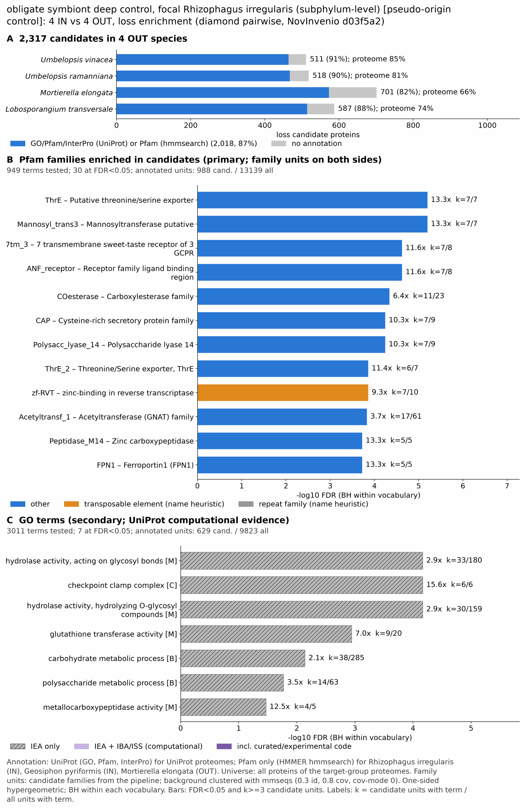

yc pseudo arbuscular mycorrhizal: functional enrichment (loss)
One-sided hypergeometric test per term; Benjamini-Hochberg FDR within each scope, level and vocabulary. Candidates are the loss candidates: gene families present in the OUT group and absent from the IN group. Universe: proteome. Background clustered: True (42481 sequences in 21042 clusters, mmseqs easy-cluster --min-seq-id 0.3 -c 0.8). Family level: one unit per candidate family and per background cluster.
Sources: Pfam: 2026-01-27-Pfam38.2; InterPro entries: 110.0; GO: releases/2026-07-26; analysis generated 2026-10-24T14:56:28. Source tables: /bigdata/stajichlab/jstajich/projects/NovInvenio_Investigations/studies/fungi/yeast_convergence/yc_pseudo_arbuscular_mycorrhizal/analysis/enrichment/outputs/loss/proteome_clustered.
Full record: PROVENANCE. Run report: report.html.
Related: yeast_convergence: comparison across contrasts
- Annotation provenance is not fully recorded: PROVENANCE.yaml lists the per-species annotation files and their checksums, but not the UniProt release they come from.
- GO results are secondary. GO annotations include computational evidence (IEA, IBA); the GO evidence column shows if a term has non-IEA support.
- Candidate families (pipeline clustering of candidates) and background clusters (mmseqs clustering of the background proteome) are made by different runs, so family-level counts are not fully comparable.
- Low annotation: the candidate set has less than 50% annotation for GO 45.8%. Enrichment for these vocabularies has low power.
- GO and InterPro cover only 3 of 4 species: Umbevina, Umberama, Lobotran. No GO and InterPro annotation for Mortelon; this species adds no units to the GO and InterPro tests, so those results describe the covered species only.
Summary figure

Annotation coverage
Fraction of proteins with at least one term per vocabulary. Universe = all proteins of the species; candidates = the candidate set.
| Species | Set | Proteins | Pfam | Pfam clan | InterPro | GO | Any |
|---|---|---|---|---|---|---|---|
| Umbevina | universe | 9235 | 81.4% | 67.2% | 85.2% | 73.5% | 85.4% |
| Umbevina | candidates | 511 | 84.0% | 69.1% | 90.4% | 67.1% | 90.8% |
| Umberama | universe | 9898 | 76.7% | 63.0% | 80.3% | 69.1% | 80.6% |
| Umberama | candidates | 518 | 83.0% | 68.5% | 89.8% | 67.6% | 90.1% |
| Mortelon | universe | 14072 | 66.2% | 56.0% | 0.0% | 0.0% | 66.2% |
| Mortelon | candidates | 701 | 81.7% | 69.8% | 0.0% | 0.0% | 81.7% |
| Lobotran | universe | 11593 | 67.3% | 55.7% | 73.9% | 60.7% | 74.1% |
| Lobotran | candidates | 587 | 79.4% | 66.8% | 87.2% | 62.5% | 87.6% |
| ALL_OUT | universe | 44798 | 71.9% | 59.8% | 54.4% | 46.1% | 75.4% |
| ALL_OUT | candidates | 2317 | 81.9% | 68.6% | 62.1% | 45.8% | 87.1% |
Tests summary
Per vocabulary: terms with FDR < 0.05 / terms tested. Protein level counts proteins; family level counts candidate families and background clusters.
| Scope | Level | Cand. units | Pfam sig / tested | Pfam clan sig / tested | InterPro sig / tested | GO sig / tested |
|---|---|---|---|---|---|---|
| whole_set | family | 1260 | 30 / 949 | 10 / 320 | 32 / 1511 | 7 / 3011 |
| whole_set | protein | 2317 | 147 / 2383 | 44 / 445 | 155 / 3869 | 156 / 4203 |
| Lobotran | family | 498 | 3 / 315 | 3 / 225 | 13 / 795 | 4 / 2340 |
| Lobotran | protein | 587 | 11 / 466 | 7 / 261 | 32 / 1123 | 11 / 2573 |
| Mortelon | family | 557 | 9 / 482 | 6 / 228 | 0 / 0 (not_available_no_annotated_units) | 0 / 0 (not_available_no_annotated_units) |
| Mortelon | protein | 701 | 16 / 701 | 10 / 272 | 0 / 0 (not_available_no_annotated_units) | 0 / 0 (not_available_no_annotated_units) |
| Umberama | family | 467 | 2 / 330 | 1 / 224 | 7 / 800 | 4 / 2059 |
| Umberama | protein | 518 | 9 / 495 | 5 / 248 | 21 / 1143 | 14 / 2279 |
| Umbevina | family | 449 | 3 / 340 | 2 / 226 | 8 / 823 | 7 / 2119 |
| Umbevina | protein | 511 | 9 / 491 | 5 / 250 | 23 / 1138 | 14 / 2330 |
Top 25 Pfam terms (whole set, family level)
25 rows shown, ordered by FDR then p-value; 25 have FDR < 0.05 (bold). 1 are tagged TE: transposable-element families, flagged by name (heuristic, not a test).
| Term | Name | k / N cand. | n / M bg | Fold | FDR (BH) |
|---|---|---|---|---|---|
| PF06738 | ThrE: Putative threonine/serine exporter | 7 / 988 | 7 / 13139 | 13.299 | 6.32e-06 |
| PF11051 | Mannosyl_trans3: Mannosyltransferase putative | 7 / 988 | 7 / 13139 | 13.299 | 6.32e-06 |
| PF00003 | 7tm_3: 7 transmembrane sweet-taste receptor of 3 GCPR | 7 / 988 | 8 / 13139 | 11.636 | 2.36e-05 |
| PF01094 | ANF_receptor: Receptor family ligand binding region | 7 / 988 | 8 / 13139 | 11.636 | 2.36e-05 |
| PF00135 | COesterase: Carboxylesterase family | 11 / 988 | 23 / 13139 | 6.36 | 4.55e-05 |
| PF00188 | CAP: Cysteine-rich secretory protein family | 7 / 988 | 9 / 13139 | 10.343 | 5.68e-05 |
| PF21294 | Polysacc_lyase_14: Polysaccharide lyase 14 | 7 / 988 | 9 / 13139 | 10.343 | 5.68e-05 |
| PF12821 | ThrE_2: Threonine/Serine exporter, ThrE | 6 / 988 | 7 / 13139 | 11.399 | 1.38e-04 |
| PF13966 | zf-RVT: zinc-binding in reverse transcriptase TE | 7 / 988 | 10 / 13139 | 9.309 | 1.38e-04 |
| PF00583 | Acetyltransf_1: Acetyltransferase (GNAT) family | 17 / 988 | 61 / 13139 | 3.706 | 1.47e-04 |
| PF00246 | Peptidase_M14: Zinc carboxypeptidase | 5 / 988 | 5 / 13139 | 13.299 | 1.88e-04 |
| PF06963 | FPN1: Ferroportin1 (FPN1) | 5 / 988 | 5 / 13139 | 13.299 | 1.88e-04 |
| PF14497 | GST_C_3: Glutathione S-transferase, C-terminal domain | 9 / 988 | 19 / 13139 | 6.299 | 2.51e-04 |
| PF00933 | Glyco_hydro_3: Glycosyl hydrolase family 3 N terminal domain | 5 / 988 | 6 / 13139 | 11.082 | 8.48e-04 |
| PF08507 | COPI_assoc: COPI associated protein | 5 / 988 | 6 / 13139 | 11.082 | 8.48e-04 |
| PF13417 | GST_N_3: Glutathione S-transferase, N-terminal domain | 7 / 988 | 13 / 13139 | 7.161 | 9.05e-04 |
| PF01612 | DNA_pol_A_exo1: 3'-5' exonuclease | 6 / 988 | 11 / 13139 | 7.254 | 0.003 |
| PF00723 | Glyco_hydro_15: Glycosyl hydrolases family 15 | 4 / 988 | 5 / 13139 | 10.639 | 0.007 |
| PF01915 | Glyco_hydro_3_C: Glycosyl hydrolase family 3 C-terminal domain | 4 / 988 | 5 / 13139 | 10.639 | 0.007 |
| PF14310 | Fn3-like: Fibronectin type III-like domain | 4 / 988 | 5 / 13139 | 10.639 | 0.007 |
| PF15477 | SMAP: Small acidic protein family | 4 / 988 | 5 / 13139 | 10.639 | 0.007 |
| PF01494 | FAD_binding_3: FAD binding domain | 13 / 988 | 56 / 13139 | 3.087 | 0.009 |
| PF03399 | SAC3_GANP: SAC3/GANP family | 5 / 988 | 9 / 13139 | 7.388 | 0.010 |
| PF03943 | TAP_C: TAP C-terminal domain | 4 / 988 | 6 / 13139 | 8.866 | 0.015 |
| PF11223 | DUF3020: SPP41, DUF3020 | 4 / 988 | 6 / 13139 | 8.866 | 0.015 |
Top 25 InterPro terms (whole set, family level)
25 rows shown, ordered by FDR then p-value; 25 have FDR < 0.05 (bold).
| Term | Name | k / N cand. | n / M bg | Fold | FDR (BH) |
|---|---|---|---|---|---|
| IPR050327 | Family:Proton-linked Monocarboxylate Transporter | 10 / 867 | 15 / 12006 | 9.232 | 1.19e-05 |
| IPR010619 | Domain:Threonine/serine exporter-like, N-terminal domain | 6 / 867 | 6 / 12006 | 13.848 | 7.03e-05 |
| IPR051361 | Family:ThrE/Ser Exporter | 6 / 867 | 6 / 12006 | 13.848 | 7.03e-05 |
| IPR004045 | Domain:Glutathione S-transferase, N-terminal | 11 / 867 | 24 / 12006 | 6.347 | 9.57e-05 |
| IPR048958 | Domain:Polysaccharide lyase 14 | 7 / 867 | 9 / 12006 | 10.77 | 9.57e-05 |
| IPR000182 | Domain:GNAT domain | 19 / 867 | 72 / 12006 | 3.654 | 1.29e-04 |
| IPR026960 | Domain:Reverse transcriptase zinc-binding domain | 6 / 867 | 7 / 12006 | 11.87 | 1.98e-04 |
| IPR024528 | Domain:Threonine/Serine exporter, ThrE | 5 / 867 | 5 / 12006 | 13.848 | 3.67e-04 |
| IPR002018 | Domain:Carboxylesterase, type B | 8 / 867 | 15 / 12006 | 7.385 | 4.90e-04 |
| IPR040079 | Family:Glutathione transferase family | 9 / 867 | 20 / 12006 | 6.231 | 6.29e-04 |
| IPR036282 | Homologous_superfamily:Glutathione S-transferase, C-terminal domain superfamily | 11 / 867 | 32 / 12006 | 4.76 | 0.001 |
| IPR050357 | Family:Arrestin domain-containing protein | 11 / 867 | 32 / 12006 | 4.76 | 0.001 |
| IPR001764 | Domain:Glycoside hydrolase, family 3, N-terminal | 5 / 867 | 6 / 12006 | 11.54 | 0.001 |
| IPR036881 | Homologous_superfamily:Glycoside hydrolase family 3 C-terminal domain superfamily | 5 / 867 | 6 / 12006 | 11.54 | 0.001 |
| IPR036962 | Homologous_superfamily:Glycoside hydrolase, family 3, N-terminal domain superfamily | 5 / 867 | 6 / 12006 | 11.54 | 0.001 |
| IPR046938 | Homologous_superfamily:DNA clamp superfamily | 5 / 867 | 6 / 12006 | 11.54 | 0.001 |
| IPR016181 | Homologous_superfamily:Acyl-CoA N-acyltransferase | 20 / 867 | 96 / 12006 | 2.885 | 0.001 |
| IPR050213 | Family:Glutathione S-transferase superfamily | 6 / 867 | 10 / 12006 | 8.309 | 0.002 |
| IPR002938 | Domain:FAD-binding domain | 10 / 867 | 34 / 12006 | 4.073 | 0.008 |
| IPR000757 | Domain:Beta-glucanase-like, N-terminal domain | 7 / 867 | 17 / 12006 | 5.702 | 0.008 |
| IPR002772 | Domain:Glycoside hydrolase family 3 C-terminal domain | 4 / 867 | 5 / 12006 | 11.078 | 0.009 |
| IPR026891 | Domain:Fibronectin type III-like domain | 4 / 867 | 5 / 12006 | 11.078 | 0.009 |
| IPR004046 | Domain:Glutathione S-transferase, C-terminal | 7 / 867 | 18 / 12006 | 5.385 | 0.010 |
| IPR014752 | Homologous_superfamily:Arrestin-like, C-terminal domain superfamily | 13 / 867 | 57 / 12006 | 3.158 | 0.010 |
| IPR050309 | Family:Type-B Carboxylesterase/Lipase | 5 / 867 | 9 / 12006 | 7.693 | 0.012 |
Top 15 GO terms (whole set, family level) — secondary, computational evidence (IEA/IBA) included
15 rows shown, ordered by FDR then p-value; 7 have FDR < 0.05 (bold).
| Term | Name | k / N cand. | n / M bg | Fold | FDR (BH) | GO evidence | Families with non-IEA |
|---|---|---|---|---|---|---|---|
| GO:0016798 | molecular_function:hydrolase activity, acting on glycosyl bonds | 33 / 629 | 180 / 9823 | 2.863 | 6.82e-05 | IEA_only | 0 |
| GO:0030896 | cellular_component:checkpoint clamp complex | 6 / 629 | 6 / 9823 | 15.617 | 6.82e-05 | IEA_only | 0 |
| GO:0004553 | molecular_function:hydrolase activity, hydrolyzing O-glycosyl compounds | 30 / 629 | 159 / 9823 | 2.947 | 6.82e-05 | IEA_only | 0 |
| GO:0004364 | molecular_function:glutathione transferase activity | 9 / 629 | 20 / 9823 | 7.028 | 0.001 | IEA_only | 0 |
| GO:0005975 | biological_process:carbohydrate metabolic process | 38 / 629 | 285 / 9823 | 2.082 | 0.007 | IEA_only | 0 |
| GO:0005976 | biological_process:polysaccharide metabolic process | 14 / 629 | 63 / 9823 | 3.47 | 0.017 | IEA_only | 0 |
| GO:0004181 | molecular_function:metallocarboxypeptidase activity | 4 / 629 | 5 / 9823 | 12.493 | 0.034 | IEA_only | 0 |
| GO:0034308 | biological_process:primary alcohol metabolic process | 4 / 629 | 6 / 9823 | 10.411 | 0.085 | IEA_only | 0 |
| GO:0044042 | biological_process:glucan metabolic process | 9 / 629 | 37 / 9823 | 3.799 | 0.140 | IEA_only | 0 |
| GO:0005381 | molecular_function:iron ion transmembrane transporter activity | 4 / 629 | 7 / 9823 | 8.924 | 0.144 | IEA_only | 0 |
| GO:0006749 | biological_process:glutathione metabolic process | 8 / 629 | 31 / 9823 | 4.03 | 0.144 | IEA_only | 0 |
| GO:0004180 | molecular_function:carboxypeptidase activity | 5 / 629 | 12 / 9823 | 6.507 | 0.144 | IEA_only | 0 |
| GO:0015926 | molecular_function:glucosidase activity | 9 / 629 | 39 / 9823 | 3.604 | 0.148 | IEA_only | 0 |
| GO:0008235 | molecular_function:metalloexopeptidase activity | 8 / 629 | 32 / 9823 | 3.904 | 0.155 | IEA_only | 0 |
| GO:0000271 | biological_process:polysaccharide biosynthetic process | 6 / 629 | 19 / 9823 | 4.932 | 0.155 | IEA_only | 0 |
Actin cytoskeleton controls
Known actin-related families and how many of their proteins pass each filter. Protein ID columns are left out.
| control | pfam_ids | desc_regex | OUT_universe | OUT_in_matrix | OUT_pass_outgroup_rule | candidates | near_miss_in1 | near_miss_in2 | n_Umbevina | n_Umberama | n_Mortelon | n_Lobotran | n_Rhizirre | n_Gigarose | n_Diveepig | n_Geospyri |
|---|---|---|---|---|---|---|---|---|---|---|---|---|---|---|---|---|
| Arp2/3 ARPC2 (P34-Arc) | PF04045 | 5 | 5 | 5 | 0 | 0 | 0 | 1 | 1 | 2 | 1 | 2 | 1 | 1 | 1 | |
| Arp2/3 ARPC3 (P21-Arc) | PF04062 | 4 | 4 | 4 | 0 | 0 | 0 | 1 | 1 | 1 | 1 | 1 | 1 | 1 | 1 | |
| Arp2/3 ARPC4 | PF05856 | 4 | 4 | 4 | 0 | 0 | 0 | 1 | 1 | 1 | 1 | 1 | 1 | 1 | 1 | |
| Arp2/3 ARPC5 (P16-Arc) | PF04699 | 4 | 4 | 4 | 0 | 0 | 0 | 1 | 1 | 1 | 1 | 1 | 1 | 1 | 1 | |
| Arp2/3 ARPC1 (description only) | arp2/3 complex.*(41|p41|subunit 1)|ARPC1 | 0 | 0 | 0 | 0 | 0 | 0 | 0 | 0 | 0 | 0 | 0 | 0 | 0 | 0 | |
| Arp2 / Arp3 (description only) | actin-related protein (2|3)\b|\bARP[23]\b | 19 | 19 | 19 | 0 | 0 | 0 | 7 | 6 | 0 | 6 | 0 | 6 | 6 | 0 | |
| WAVE complex NCKAP1 | PF09735 | 0 | 0 | 0 | 0 | 0 | 0 | 0 | 0 | 0 | 0 | 0 | 0 | 0 | 0 | |
| WAVE complex CYFIP (FragX_IP) | PF05994 | 0 | 0 | 0 | 0 | 0 | 0 | 0 | 0 | 0 | 0 | 0 | 0 | 0 | 0 | |
| WAVE complex ABI | PF07815|PF27594 | 0 | 0 | 0 | 0 | 0 | 0 | 0 | 0 | 0 | 0 | 0 | 0 | 0 | 0 | |
| SCAR/WAVE (SCAR_helical) | PF27569 | 0 | 0 | 0 | 0 | 0 | 0 | 0 | 0 | 0 | 0 | 0 | 0 | 0 | 0 | |
| WASP family (WH1) | PF00568 | 8 | 8 | 8 | 0 | 0 | 0 | 2 | 2 | 2 | 2 | 2 | 1 | 0 | 2 | |
| WH2 motif (WASP, WAVE, others) | PF02205 | 10 | 9 | 9 | 0 | 1 | 0 | 2 | 2 | 3 | 3 | 2 | 1 | 2 | 2 | |
| Formin FH2 | PF02181 | 17 | 17 | 15 | 1 | 0 | 0 | 4 | 5 | 4 | 4 | 3 | 2 | 1 | 2 | |
| Formin Drf_GBD / Drf_FH3 / Drf_DAD | PF06371|PF06367|PF06345 | 21 | 21 | 21 | 5 | 0 | 0 | 7 | 6 | 4 | 4 | 3 | 2 | 2 | 2 | |
| Ena/VASP (VASP_tetra) | PF08776 | 0 | 0 | 0 | 0 | 0 | 0 | 0 | 0 | 0 | 0 | 0 | 0 | 0 | 0 | |
| Coronin (description only) | coronin | 6 | 6 | 6 | 0 | 0 | 0 | 2 | 2 | 0 | 2 | 0 | 1 | 1 | 0 | |
| Cortactin (HS1_rep) | PF02218 | 0 | 0 | 0 | 0 | 0 | 0 | 0 | 0 | 0 | 0 | 0 | 0 | 0 | 0 | |
| Myosin 2 tail (Myosin_tail_1) | PF01576 | 2 | 2 | 2 | 0 | 0 | 1 | 0 | 0 | 1 | 1 | 0 | 0 | 1 | 0 | |
| Myosin head (all myosins) | PF00063 | 29 | 29 | 29 | 0 | 0 | 0 | 8 | 9 | 7 | 5 | 5 | 6 | 5 | 3 |
Page written by bin/generate_enrichment_page.py.